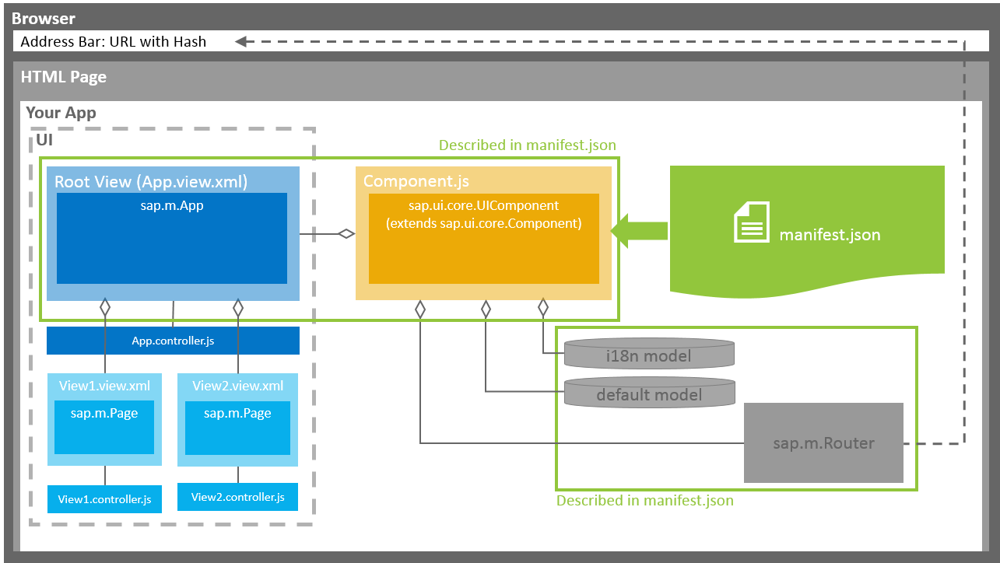

manifest.json), the component (Component.js),
and the main view of the app (App.view.xml).
manifest.json)We recommend that you use the manifest.json file to configure the app
settings and put all important information needed to run the app in there. Using
this approach means you need to write less application code, and you can already
access the information before the app is instantiated.
Some attributes in the descriptor are just for information purposes, such as the minimum OpenUI5 version
(minUI5version), others help external components (for example
the SAP Fiori launchpad
(FLP)) to integrate
the application correctly, but most of the attributes are actually used to configure
specific aspects of the app that are needed frequently.
The most important configuration settings are:
Models. Examples of models are the configuration of the OData service
(default model) and language files (i18n model). All models described in
the manifest.json file are automatically
instantiated when the app is started.
Libraries and components that are used in the app and have to be loaded during app initialization.
The root view of your application.
Routing configuration that defines the navigation between views.
App.view.xml)The App.view.xml file defines the root view of the app. In most cases, it
contains an App control or a SplitApp control as a
root control.
OpenUI5 supports multiple view
types (XML, HTML, JavaScript, JSON). We recommend using XML views, as for these you
have to separate the controller logic from the view definition in a controller file
(for example App.controller.js).
We also recommend creating a separate view file for each view you want to use in your app.
Component.js)The Component.js file holds the app setup. The
init function of the component is automatically started by OpenUI5 when the
component is instantiated.
Your component extends UIComponent. If you are overriding the init function
of your component, you have to make sure that you call the
init function of UIComponent and
initialize the router afterwards.
All apps are started using an HTML page that loads OpenUI5 and the component. You have two options: You can build an app for the FLP or build a standalone app.
App for FLP
The FLP instantiates the component based on the information given in the descriptor file. The FLP can contain multiple apps at the same time. Each app can define local settings, such as supported themes or supported devices.
This app cannot be run standalone, meaning no index.html file is
created but only HTML files for testing the app in the FLP sandbox.
For more information, search for Embedding SAPUI5 Applications in the documentation of your SAP NetWeaver version on the SAP Help Portal at https://help.sap.com/viewer/p/SAP_NETWEAVER.
Standalone app
If you want to run your app standalone, you need to create an index.html file. Within this file, you
instantiate the component.